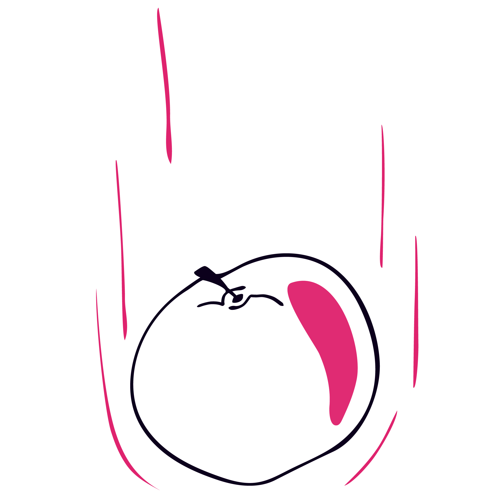

Fysikk
Mohammad Zain Arshad

Litt om meg
Ta kontakt for mer informasjonTilgjengelige tider
man-søn: 12-21Kontakt meg
Asem Ilyas

Litt om meg
Ta kontakt for mer informasjonTilgjengelige tider
man-fre: 11-23.59Kontakt meg
Shazad Karamat

Litt om meg
Ta kontakt for mer informasjonTilgjengelige tider
Ta kontakt for mer informasjon.Kontakt meg
Ingvild Nilsson

Litt om meg
Hei Jeg heter Ingvild og studerer på lektorprogrammet ved UiO med fordypning i fysikk og matematikk. Denne våren skulle jeg egentlig ha vært i praksis, men det ble sårt avbrutt av Covid-utbruddet. Jeg vil gjerne være med til å gro kunnskap og har erfaring med 1 til 1 undervisning i først og fremst matematikk på ungdomsskole og vgs nivå, samt erfaring fra prakis.Tilgjengelige tider
Ukedager: 16-21, Mandag, Tirsdag, Torsdag, Fredag: 08-16Kontakt meg
Kristin Blilie

Litt om meg
Sivilingeniør med spesialisering i geofysikkTilgjengelige tider
man-søn: FleksibelKontakt meg
Aslak Roalkvam Skåra

Litt om meg
Ta kontakt for mer informasjonTilgjengelige tider
man-søn: 13-17Kontakt meg
Ida Engan

Litt om meg
Sivilingeniør vann og miljøteknikTilgjengelige tider
man-søn: 17-21 hverd. (hele dagen helg)Kontakt meg
Bushra Butt

Litt om meg
Ta kontakt for mer informasjonTilgjengelige tider
man-fre (lør-søn): 16-20 (16-20)Kontakt meg
Sunniva Sofie Bjørnbeth

Litt om meg
Studerer lektor i samfunnsfag, og hadde realfag på VGS så kan bistå med mye forskjellig!Tilgjengelige tider
Ta kontakt for mer informasjon.Kontakt meg
Isak B. Lande

Litt om meg
Trainee / M.Sc., Environmental Physics and Renewable EnergyTilgjengelige tider
Man-Tor: fleksibelKontakt meg
Pernille Bucher-Johannessen

Litt om meg
Ta kontakt for mer informasjonTilgjengelige tider
man-søn: 16-21Kontakt meg
Shehroz Shirazi

Litt om meg
Jeg er utdannet sivilingeniør innen veg og transport og jobber som vegplanlegger. Interessene mine spenner seg fra teknologi, språk, kreativitet og innovasjon.Tilgjengelige tider
Søndag: 08-16, Torsdag, Fredag: 16-21Kontakt meg
Thina Amalie Biørn Michelet-Rosø

Litt om meg
Bachelor i statsvitenskap, master i diakoniTilgjengelige tider
man-søn: 09-20Kontakt meg
Sheroz Shirazi

Litt om meg
Vegplanlegger / Siv.ing transport / InnovasjonTilgjengelige tider
tors-lør: 17-20Kontakt meg
Kanwal Ali

Litt om meg
Ta kontakt for mer informasjonTilgjengelige tider
Ta kontakt for mer informasjon.Kontakt meg
Fagoversikt